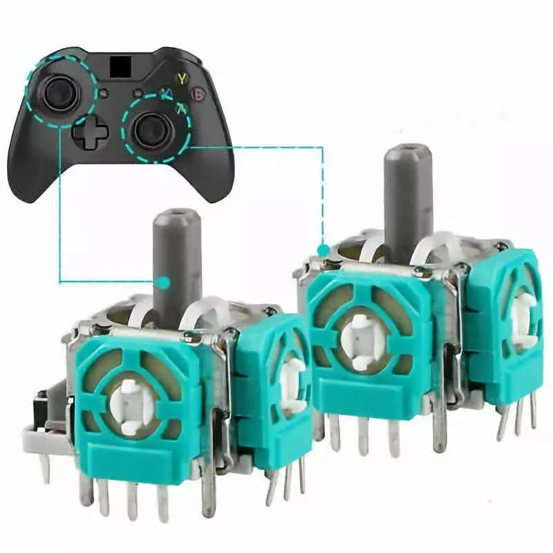
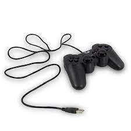

¿QUÉ ES UN MANDO DE VIDEOJUEGO?
Son métodos de entrada complejos, donde encontramos gran cantidad de botones de diferentes tipos organizados alrededor del cuerpo, palancas y todo compuesto con diferentes Feedback a través de la vibración y diferentes métodos de entrada como touchpads.
Un mando de control es un periférico de entrada y salida que nos permite controlar la acción en un videojuego. Estos mandos están pensados para agarrarse con ambas manos y utilizar ciertos dedos de cada mano para controlarlo
PARTES DEL MANDO
D-PAD (CRUCETA DIGITAL) : Cruz direccional utilizada en juegos 2D, solo tiene un valor por dirección que es pulsado. Esto fue un problema para los primeros juegos, pero se solucionó con los sticks analógicos
Los botones de acción se han ordenado como cuatro botones distintos, pero antigüamente estos eran dos e incluso mandos con seis. PlayStation tuvo un gran éxito con la configuración de 4 botones frontales que posteriormente se adoptaría en la industria. Pese a esto, la primera consola con esta configuración fue la SNES de Nintendo.
Los botones superiores surgieron con Super NES, dónde los japonesesla crearon ya que pensaron que el mando de Mega Drive era demasiado grande y es cuando Nintendo decidió redistribuir esos botones. En la primera PlayStation, SONY incorporó dos botones traseros y su evolución llegó cuando Xbox les dió un recorrido para que fuesen analógicos, que permitió un mejor control de la velocidad y los disparos en los juegos.
Los sticks analógicos usan el potenciómetro, que mide el desplazamiento con el que mobemos el stick y la dirección, generando un valor. El stick izquierdo es para mover el personaje y el derecho para cambiar la perspectiva de la cámara.
ORIGEN DEL MANDO DE VIDEOJUEGOS

El primero fue Atari con el Joystick de la primera VCS; no es considerado un mando de videojuego ya que no hace uso de D-Pad sino de un Joystick. Se estandarizó como el puerto de control de multitud de sistemas en el mercado, permitiendo que los diferentes joysticks se pudieran utilizar no solo en la consola de Atari sino en los ordenadores de 8 y 16 bits que aparecieron años más tarde en el mercado.
La primera consola en contar con un GamePad fue la Famicom de Nintendo, distribuida con el nombre NES. Utilizó un registro de desplazamiento dónde redujo el número de pines a 7, pero podía utilizar un botón adicional llamado Select.
Posteriormente, SEGA; rival de Nintendo, adoptó en su Master System el puerto Atari, dónde colocó un botón adicional, pero su consola de 16 bits necesitó el registro de desplazamiento en su interior.
Cuando llegaron las consolas de 16 bits, los joysticks estaban ya en proceso de desaparición. Los sistemas que los utilizaban, Atari y Commodore, estaban de capa caída y fueron devorados en el mercado por el enorme éxito de las consolas.
LLEGADA DEL USB
Las consolas evolucionaron hasta un sustrato común, lo que llevó a la necesidad de la estandarización de los métodos de control. El USB nació como una forma de reemplazar los viejos puertos de E/S.
Las consolas en tardaron en adoptar el USB, lo hizo en la generación de las consolas HD donde se dejaron de utilizar puertos propietarios para adoptar el USB, esto le permitió a Microsoft hacer que el mando de su Xbox 360 se convirtiese en el estándar para el PC, situación que continúa hasta el día de hoy, donde la forma base ha evolucionado más bien poco.